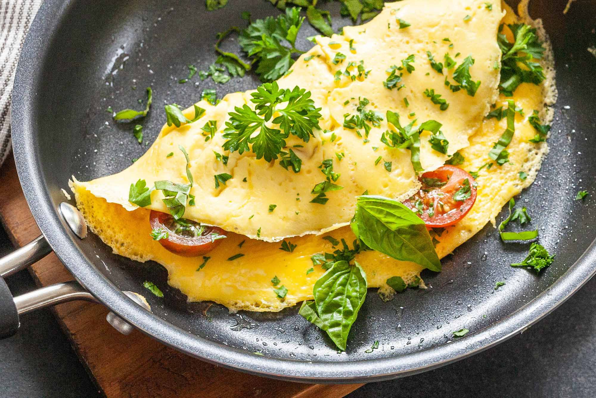

Heat the beef drippings and oil together in a saute pan. Working in batches, brown the beef strips on all sides. Remove from the pan. In the same pan, fry the onions until soft, about 15 minutes, then add the garlic for 1 minute. Remove. (Check if there is fat in the pan. If not, add a good tablespoon of butter and let it melt.) Add the flour and sugar to the pan and cook for 1 minute to make a roux. Gradually whisk in the stock and bring to a boil. (At this point, turn the oven on to 325 degrees F/160 degrees C.) Add the beer and vinegar to the boiling stock, and bring back to a boil, cooking until thickened, about 10 minutes. Remove from the heat.
In a large casserole dish, layer the onions alternately with the beef strips, seasoning each layer as you go with salt and pepper. Tuck in the bouquet garni and pour the sauce over. Cover and bake for 2 1/2 hours. If you can wait a day before eating, cool the dish completely when it's out of the oven and refrigerate overnight: the flavor will be even better when you reheat it.
INGREDIENTS
2 tablespoons beef drippings or butter, plus more as needed
1 tablespoon olive oil
3 pounds/1.5 kg sirloin tip, cut into fat fingers
3 large onions, sliced
4 cloves garlic, chopped
2 tablespoons all-purpose flour
1 tablespoon brown sugar
1 1/2 cups/375 ml beef stock
2 cups/500 ml beer
1 tablespoon red-wine vinegar
Salt and freshly ground black pepper
1 bouquet garni
METHOD
Place the noodles in a large bowl. Completely cover them with cold water and soak for 25-35 minutes, until slightly pliable.
In a separate bowl, mix the sauce ingredients together. Set aside. (If adding the peanut butter, it won't completing mix in until heated.)
Generously salt and pepper the chicken pieces. Set a wok or large deep pan over medium heat and add the oil. Sauté the chicken until mostly cooked, 3-5 minutes.
Stir in the garlic, green onions, and bean sprouts. Cook for 1-2 minutes. Push the ingredients to the sides, and scramble the eggs in the middle of pan until firm. Mix together.
Drain the noodles well, then add the noodles and sauce. Stir gently to incorporate, cooking another 3-5 minutes, careful not to overcook the noodles Add 2-4 tablespoons water if needed. Serve warm topped with peanuts and cilantro.
INGREDIENTS
For the Pasta:
1 pound boneless skinless chicken, cut into bite size pieces.
8 ounces pad Thai noodles (rice noodles)
2 tablespoons peanut oil or coconut oil
3 large eggs
6 green onions, chopped
2 cups mung bean sprouts
2 cloves garlic, minced
For the Sauce:
1/4 cup brown sugar, packed
1/4 cup soy sauce
1/4 cup fresh lime juice
2 tablespoons fish sauce
1 tablespoons creamy peanut butter (optional)
3-5 teaspoons chile garlic sauce
Toppings:
1/3 cup fresh cilantro leaves
1/3 cup peanuts, lightly chopped

METHOD
Step 1:
Slice potatoes as many as you like.
Step 2:Heat some olive oil on a pan.
Step 3:
Add the potatoe slices fry until brown.
Step 4:Beat 2 eggs in a bowl with a drop of milk.
Step 5:Add to pan with cheese cook until ready.
Step 6:Put on grill.
Step 7:Put pan with omelette under grill for one minute. Keep an eye on the omelette as it can burn easily.
Step 8:Serve and enjoy
INGREDIENTS
Olive oil
cheese grated
2 eggs
potatoes
Milk
METHOD
Step 1:
cut chicken into cudes
Step 2:
and put to boil for 15 mins then add a pinch or curry powder and salt.
Step 3:
in a seprate pan fry the pineapple alone with almonds on low heat till almonds turn light brown, then remove pan from heat
Step 4:
when chicken is done add to pan with pineapple and almonds and add 2 tablespoons of soya sauce then fry for 5 mins.
Step 5:
Step 6:and enjoy : )
INGREDIENTS
1 chicken breast
few pine apple slices (cut in to cubes)
handfull of almonds (sliced)
soya sause
salt
curry powder
METHOD
Heat a wok or a skillet over high heat; add 1 tbsp cooking oil and swirl to coat. Pour beaten eggs into the wok and scramble.
When the eggs are cooked 3/4 way, add remaining 2 tbsp cooking oil and cold jasmine rice. Breakdown rice and mix it with eggs.
Add soy sauce around the edge of the wok, so it will burn slightly for the smoky umami flavor. Add salt to your taste and mix everything well. Reduce heat to low if you need to.
Turn off the heat, stir in green onions. Garnish with sesame seeds if you’d like to! Enjoy with any other dishes you decided to serve with!
INGREDIENTS
3 tbsp cooking oil
4 eggs, beaten with pinch of salt
4 cups cold jasmine rice
2 tbsp soy sauce
pinch of salt
4 green onions, sliced
METHOD
Step 1:Take the salmon and place it in a piece of tin foil.
Step 2:Sprinkle salt pepper, herbs and garlic all over it.
Step 3:Put either the butter or olive oil on it, and rap it up.
Step 4:Put the salmon into a preheated oven at 190degrees and cook for 30mins
Step 5:Serve!
INGREDIENTS
1. Salmon fillet (the frozen ones from lidl are perfect and really cheap!)
2. Salt and pepper
3.Knob of butter or olive oil
4.Ground garlic
5. Dried or fresh herbs
6.Tin foil
METHOD
Step 1:Slice the cucumbers and mix them with other
Step 2:components.
Step 3:
Step 4:enjoy
INGREDIENTS
Cucumber
sour cream (light)
little bit of lemon peper